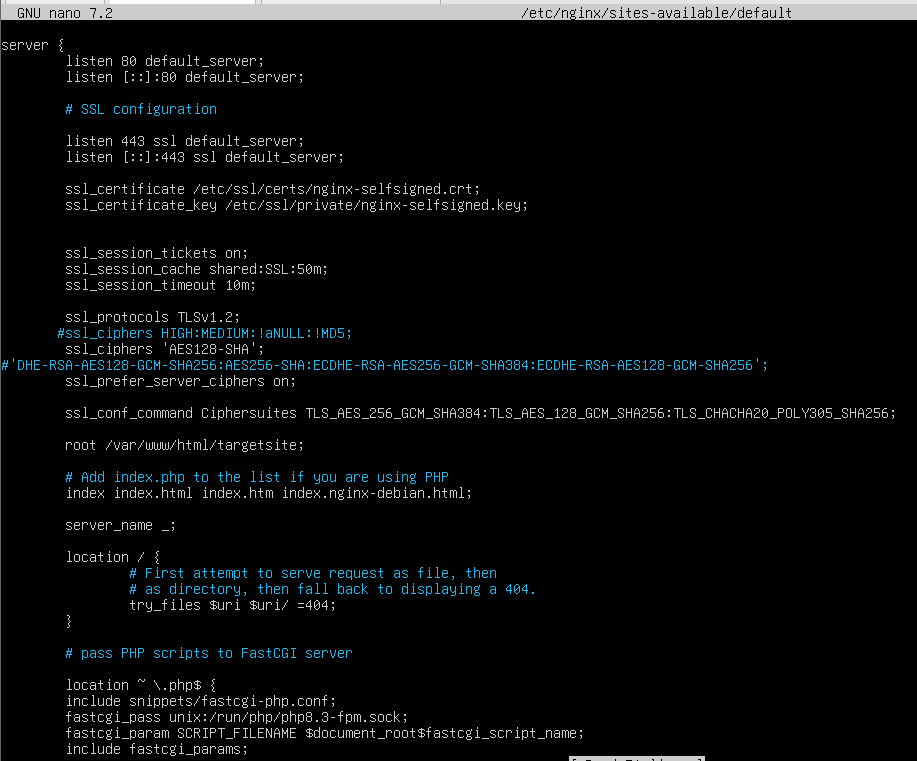
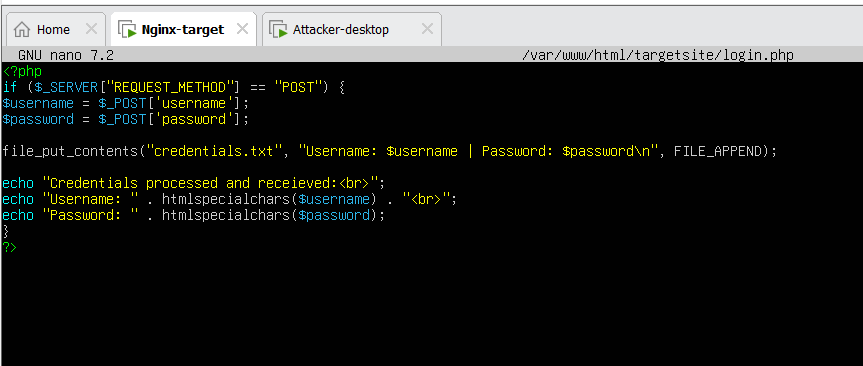
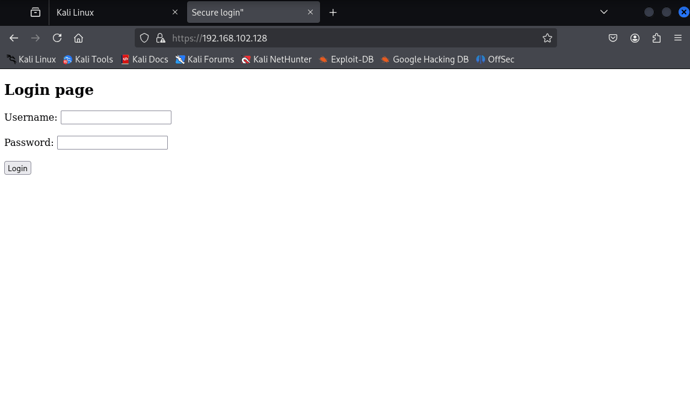
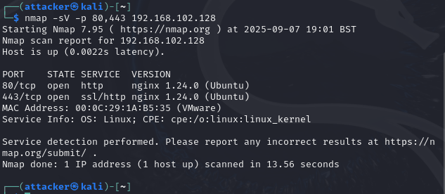
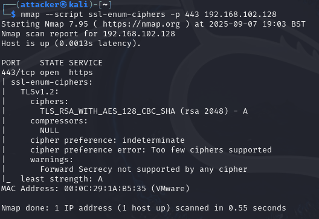
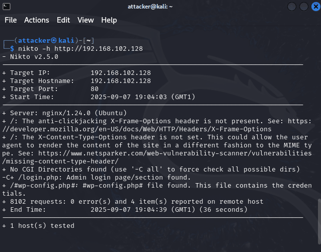
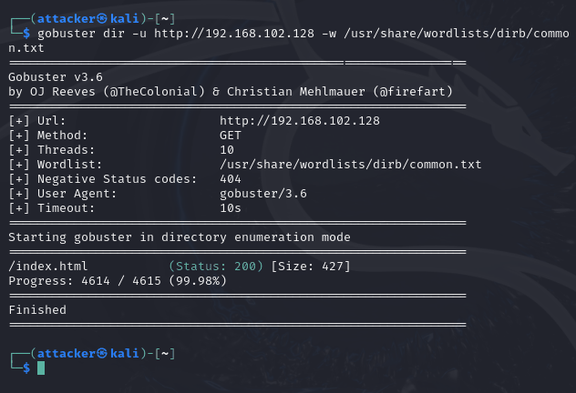
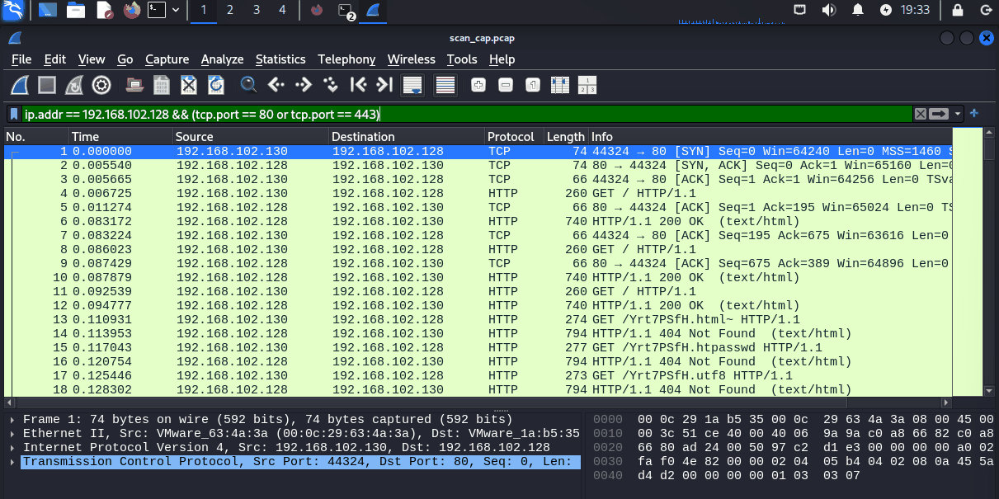
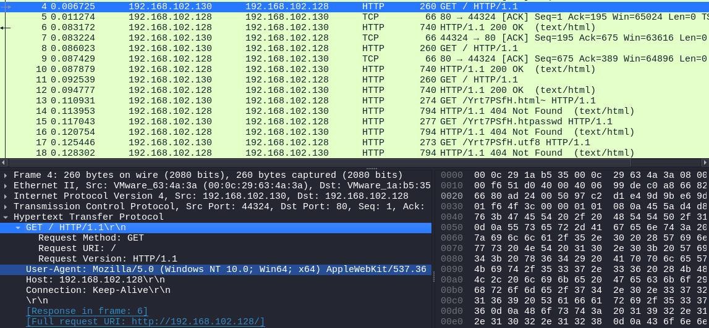

To show how attackers enumerate services, probe for weaknesses and brute-force hidden content, and how that same scanning looks from the defender's side.


login.php.
I started by checking which services were exposed:
nmap -sV -p 80,443 192.168.102.128Nmap confirmed nginx 1.24.0 running on port 80 (HTTP) and port 443 (HTTPS).

Next I enumerated the TLS versions and cipher suites on port 443:
nmap --script ssl-enum-ciphers -p 443 192.168.102.128
The server only supported TLS 1.2 with a single RSA key exchange cipher suite, TLS_RSA_WITH_AES_128_CBC_SHA, and Nmap warned that forward secrecy wasn't supported by any cipher. That means anyone who got hold of the server's private key could decrypt every HTTPS session ever captured from it, which is exactly the attack I demonstrate in my TLS decryption project.

nikto -h http://192.168.102.128Nikto sent over 8,000 requests in 36 seconds and reported:
X-Frame-Options header was missing, leaving the site open to clickjackingX-Content-Type-Options header wasn't set/login.php, which it flagged as an admin login pagewp-config.php backup file. This was a false positive, as the server isn't running WordPress
login.php.gobuster dir -u http://192.168.102.128 -w /usr/share/wordlists/dirb/common.txt
Gobuster only turned up /index.html. The login page isn't in the common.txt wordlist, so it was Nikto that found it, which is a good reminder that brute-forcing is only as good as the wordlist behind it.

/index.html.To see what all this looks like from the other side, I captured the traffic while re-running Nikto:
sudo tcpdump -i eth0 -w scan_cap.pcapI ran the capture on the attacker VM, but the packets are the same ones the webserver receives. In Wireshark the scan is a flood of requests from one IP, most of them for random file names that come back as 404 Not Found.

Interestingly, Nikto's requests used a normal Windows browser User-Agent, so it doesn't simply announce itself. Gobuster did though, with gobuster/3.6 as its User-Agent (visible in Figure 7).

The key finding was the TLS configuration: RSA key exchange only, with no forward secrecy. Beyond that, the server had two open ports (HTTP on 80 and HTTPS on 443), was missing two security headers, and had a login page that Nikto found but Gobuster didn't. On the wire, the scanning was very easy to spot.
wp-config.php result here, so findings need checking by hand. Running a scan this noisy against a real organisation would likely trigger alerts or rate limiting.X-Frame-Options and X-Content-Type-Options headers.gobuster in the User-Agent.All scanning was against my own lab. No external systems were targeted.